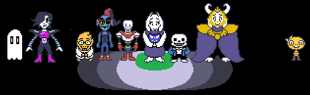
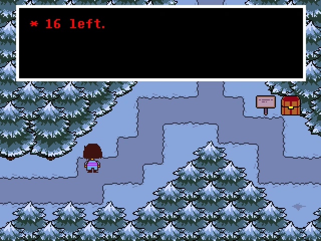

Rota Pacifista
A Rota Pacifista é voltada para jogadores que não querem machucar ninguém durante a jornada
O que você precisa saber:
- Não mate nenhum inimigo: Sempre use a opção "Poupar" ou "Agir" nas batalhas
- Seja amigo dos personagens principais, como Papyrus, Undyne e Alphys — isso exige completar interações e sidequests específicas com eles
- Derrote o jogo pelo menos uma vez antes de liberar a Rota Pacifista Verdadeira (True Pacifist)
- Explore e converse com todos: os detalhes de falas e decisões fazem diferença!
Rota Neutra
A Rota Neutra é o caminho mais comum e flexível, ideal para a primeira vez jogando
O que você precisa saber:
- Você pode escolher entre poupar ou matar inimigos — suas escolhas afetam o final
- O jogo tem várias variações de final neutro, dependendo de quem você poupou ou matou
- Não há exigências rígidas: é a rota mais livre em termos de decisões e moralidade
- Essa rota é obrigatória para desbloquear a Rota Pacifista Verdadeira depois

Rota Genocida
A Rota Genocida é indicada apenas para jogadores que já conhecem bem o jogo, pois altera drasticamente a história e o mundo de Undertale
O que você precisa saber:
- Derrote todos os inimigos de cada área até surgir a mensagem “Ninguém veio...” nas batalhas aleatórias
- Você não pode poupar ninguém: qualquer ato de misericórdia cancela a Rota Genocida e transforma o jogo em uma rota neutra
- Prepare-se para batalhas desafiadoras, como o combate contra Sans, exclusivo dessa rota
- Essa rota deixa consequências permanentes no seu jogo, mesmo após reiniciar o arquivo de salvamento
